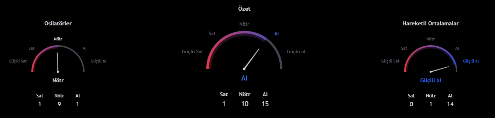
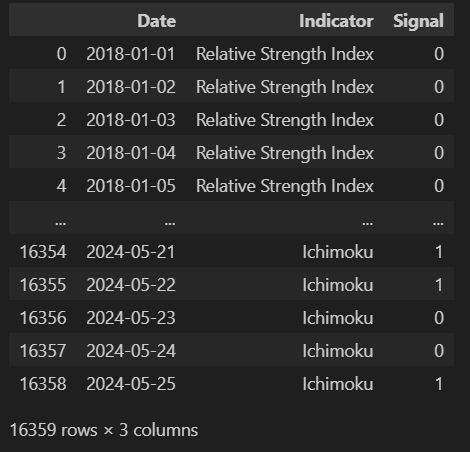
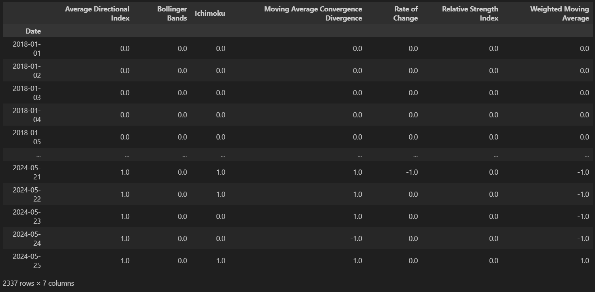
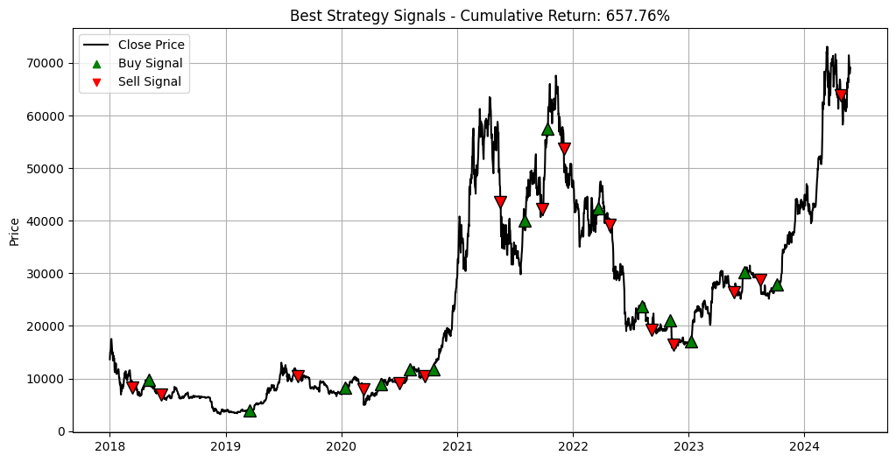
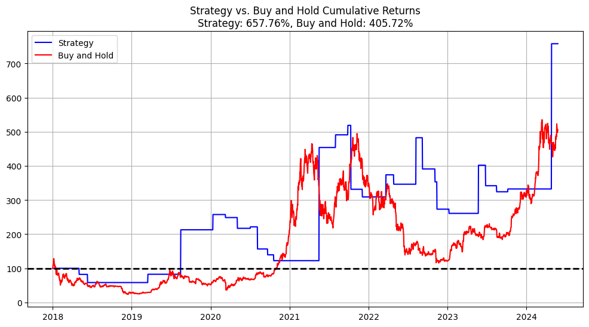
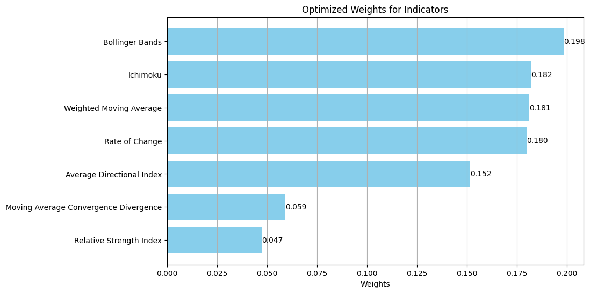
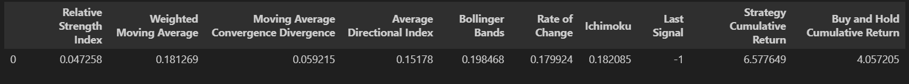
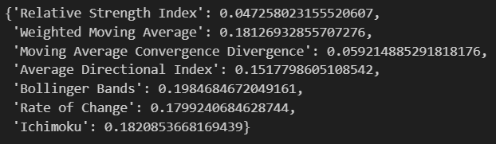

import pandas as pd
import numpy as np
import yfinance as yf
from itertools import product
from ta import trend, momentum, volatility
import matplotlib.pyplot as pltGiriş
Tradingview platformundaki tanıma göre teknik reytingler, işlemcinin ve yatırımcıların karlı işlemler bulmasını kolaylaştırmak için çeşitli teknik göstergelerin derecelendirmelerini birleştiren teknik bir analiz aracıdır şeklindedir. Örneğin, BTC-USD’nin teknik reytingi aşağıdaki gibidir.

Oluşturacağımız teknik reytinglerin mantığı Tradingview platformundaki gibi olsa da bazı değişiklikler yapacağız. Bu değişiklikleri aşağıdaki gibi özetleyebiliriz.
- İndikatörlerin seçilmesi: Tradingview platformunda kullanılan indikatörlerden farklılaşacağız. Bu noktada, yatırımcı kendi indikatörlerini seçebilir.
- Stratejilerin oluşturulması: Her bir indikatör için bir alım-satım stratejisi belirleyeceğiz. Bu noktada, yatırımcı kendi alım-satım stratejilerini belirleyebilir.
- Stratejide kullanılacak değerlerin optimize edilmesi: Tarihsel verileri kullanarak ilgili indikatöre ait alım-satım stratejisinde kullanılacak değerlerden en iyi kümülatif getiri sağlayanları kullanacağız.
- Reytinglerin oluşturulmasında ağırlıkların optimize edilmesi: Alım-satım kararında her indikatöre eşit ağırlık vermek yerine en iyi kümülatif getiri performansı gösteren ağırlık dağılımını kullanacağız.
Çalışmada, tüm etkilerin sıfır varsayıldığının ve sadece getiriye odaklanıldığının altını çizelim. Ayrıca bu çalışma, aktif bir şekilde alım-satım stratejisi takip etmenin al-tut stratejisini her zaman yenebileceğini iddia etmemektedir.
Kullanılacak Kütüphaneler
Veri Setinin Oluşturulması
df = yf.download(
tickers='BTC-USD',
start='2018-01-01',
interval='1d',
progress=False
)
if 'Adj Close' in df.columns:
df = df.drop(columns='Close')
df = df.rename(columns={'Adj Close': 'Close'})Hesaplama
Kümülatif Getiri
Çalışmada kullanacağımız kümülatif getiri, tüm değerleme dönemi boyunca bileşik günlük getiriyi verir ve aşağıdaki gibi formülize edilebilir.
\(R_c = \prod_{i=1}^{n} (1 + R_i) - 1 = (1 + R_1)(1 + R_2)...(1 + R_n) - 1\)
Bir örnek ile nasıl hesaplandığına bakalım.
# Veri
data = {
'Date': pd.date_range(start='2024-05-20', periods=5, freq='D'),
'Prices': [100, 101, 100.5, 102.5, 101.3]
}
data_df = pd.DataFrame(data)
# Getiri
data_df['Return'] = data_df['Prices'].pct_change()
# Kümülatif Getiri
data_df['Cumulative Return'] = (1 + data_df['Return']).cumprod() - 1
cumulative_return = data_df['Cumulative Return'].iloc[-1]
print(f"Cumulative Return: {cumulative_return:.2%}")
# Başlangıç Değer Değişimi
initial_value = 100
final_value = initial_value * (1 + cumulative_return)
print(f"Final Value: {final_value:.2f} TL")Hesaplamanın Tasarımı
Popüler bir teknik analiz kütüphanesi olan ta kütüphanesini ve aşağıdaki trend, momentum ve volatilite indikatörlerini kullanacağız.
- Trend
- Weighted Moving Average:
WMAIndicator - Moving Average Convergence Divergence:
MACD - Average Directional Movement Index:
ADXIndicator - Ichimoku Kinkō Hyō:
IchimokuIndicator
- Weighted Moving Average:
- Momentum
- Relative Strength Index:
RSIIndicator - Rate of Change:
ROCIndicator
- Relative Strength Index:
- Volatilite
- Bollinger Bands:
BollingerBands
- Bollinger Bands:
Her bir indikatörde al sinyallerine 1, sat sinyallerine -1 ve nötr sinyallerine 0 atayacağız. Tüm optimizasyon işlemleri bittikten sonra aşağıdaki kriterleri baz alarak alım-satım kararını uygulayacağız.
- -1.0 \(\leq\) reyting \(\leq\) -0.5 ise Sat
- -0.5 \(<\) reyting \(<\) 0.5 ise Nötr
- 0.5 \(\leq\) reyting \(\leq\) 1.0 ise Al
İndikatörlerin Hesaplanması
ta_rating_df adında bir pandas DataFrame oluşturalım. Bu DataFrame, tarih (Date), indikatör (Indicator) ve sinyal (Signal) bilgilerini içerecek. İndikatörlerden gelen bilgiler ta_rating_df’te saklanacak.
ta_rating_df = pd.DataFrame(columns=['Date', 'Indicator', 'Signal'])Sinyallerin Güncellenmesi
İndikatörlerin alım-satım stratejilerinde kullanılacak değerlerini optimize ederken alım-satım sinyallerini güncelleyeceğiz. Bu güncelleme ile beraber indikatörün art arda aynı sinyali üretmesi yerine sırayla sinyal üretmesini sağlayacağız.
def update_signals(signals):
updated_signals = []
previous_signal = None
for signal in signals:
if signal == previous_signal:
updated_signals.append(0)
else:
updated_signals.append(signal)
previous_signal = signal if signal in (1, -1) else previous_signal
return updated_signalsupdate_signals fonksiyonu signals adında bir parametre alıyor. Güncellenmiş sinyalleri saklamak için updated_signals adında boş bir liste kullanılıyor. Bir önceki sinyali saklamak için de başlangıçta None olarak ayarlanmış previous_signal adında bir değişken kullanılıyor. Sonra süreç her bir sinyal için for döngüsü ile devam ediyor.
if bloğu: Eğer mevcut sinyal önceki sinyal ile aynıysa updated_signals listesine 0 (nötr sinyali) ekleniyor.
else bloğu: Eğer mevcut sinyal önceki sinyal ile aynı değilse updated_signals listesine mevcut sinyal ekleniyor. Devamında ise mevcut sinyal 1 (al sinyali) veya -1 (sat sinyali) ise previous_signal değişkenine signal değişkeninin değeri atanıyor, aksi halde previous_signal değişkeninin değeri korunuyor.
Yukarıdaki işlemler bittikten sonra fonksiyon, updated_signals içerisinde bulunan güncellenmiş sinyaller listesini döndürür.
İndikatörlerin Optimize Edilmesinde Genel Yaklaşım
İndikatörlerin alım-satım stratejilerinde kullanılacak değerler optimize edilirken hepsinde ortak olan bir süreç bulunmaktadır. Alım-satım sinyali verecek değerler belli bir aralık içine alınır ve tarihsel verilerle kümülatif getirileri hesaplanır. En iyi kümülatif getiriyi sağlayan değerler kullanılarak sinyaller üretilir ve veriler ta_rating_df’te saklanır.
Kodsal olarak süreç şöyledir:
best_cum_return, best_params ve best_strategy_df değişkenleri tanımlanır. best_cum_return değişkeninin -np.inf değeri negatif sonsuz demektir ve henüz en iyi kümülatif getirinin hesaplanmadığı; best_params değişkeninin None değeri henüz en iyi getiriyi sağlayan stratejiye ait parametrelerin olmadığı; best_strategy_df değişkeninin None değeri ise henüz en iyi getiriyi sağlayan stratejinin işlem verilerinin olmadığı anlamına gelir.
product fonksiyonu ile stratejide kullanılacak değerler oluşturulur ve bu değerler döngüye girer.
Sinyaller üretilir ve bu sinyaller güncellenir. Güncellenen sinyaller üzerinden kümülatif getiriler hesaplanır. Kümülatif getirilerden önce hesaplanan getiri hesaplamasında bir al-sat sinyalinden diğer al-sat sinyaline olan geçişe dikkat edilir.
strategy_cum_return’ün best_cum_return’den büyük olup olmadığına bakılır. Eğer büyükse başta oluşturulan değişkenler güncellenir.
Stratejinin en iyi değerleri ekrana basılır ve DataFrame’e son hali verilerek döndürülür.
İndikatörlerin Optimize Edilmesi
Relative Strength Index
Relative Strength Index, bir varlığın geçmiş fiyat değişimlerine dayalı olarak aşırı alım veya aşırı satım durumlarını belirlemeye yardımcı olan bir momentum indikatörüdür.
Relative Strength Index için seçilen strateji, indikatörü kullanarak alım-satım sinyalleri üretir ve bu sinyalleri optimize ederek en iyi kümülatif getiriyi elde etmeyi amaçlar. Belirli bir pencere boyutu, aşırı alım ve aşırı satım seviyeleri aralığını kullanarak fiyatların aşırı alım veya aşırı satım durumunda olup olmadığını belirler. Ardından, bu sinyalleri alım ve satım pozisyonlarına dönüştürür ve stratejinin getirisini hesaplar. En iyi parametrelerle belirlenen bu sinyaller daha sonra alım-satım stratejisi için kullanılır.
def optimize_and_calculate_rsi(df, window_range, overbought_range, oversold_range):
best_cum_return = -np.inf
best_params = None
best_strategy_df = None
for window, overbought, oversold in product(window_range, overbought_range, oversold_range):
strategy_df = df.copy().reset_index(drop=True)
rsi = momentum.RSIIndicator(strategy_df['Close'], window=window).rsi()
signal = np.where(rsi < oversold, 1, np.where(rsi > overbought, -1, 0))
strategy_df['Signal'] = signal
strategy_df['Signal Updated'] = update_signals(strategy_df['Signal'].tolist())
if not (1 in strategy_df['Signal Updated'].values and -1 in strategy_df['Signal Updated'].values):
continue
strategy_df_ret_calc = strategy_df.copy()
strategy_df_ret_calc = strategy_df_ret_calc[strategy_df_ret_calc['Signal Updated'] != 0]
strategy_df_ret_calc['Strategy Return'] = strategy_df_ret_calc['Close'].pct_change()
for index, row in strategy_df_ret_calc.iterrows():
signal = row['Signal Updated']
if signal == 1:
strategy_df_ret_calc.loc[index, 'Strategy Return'] *= -1
strategy_df_ret_calc = strategy_df_ret_calc[['Strategy Return']]
strategy_df = pd.merge(strategy_df, strategy_df_ret_calc, how='left', left_index=True, right_index=True)
strategy_df['Strategy Return'] = strategy_df['Strategy Return'].fillna(0)
strategy_df['Cumulative Return'] = (1 + strategy_df['Strategy Return']).cumprod() - 1
strategy_cum_return = strategy_df['Cumulative Return'].iloc[-1]
if strategy_cum_return > best_cum_return:
best_cum_return = strategy_cum_return
best_params = (window, overbought, oversold)
best_strategy_df = strategy_df.copy()
print(f"Best Params (Relative Strength Index): Window={best_params[0]}, Overbought={best_params[1]}, Oversold={best_params[2]}")
best_strategy_df['Date'] = df.index
best_strategy_df['Indicator'] = 'Relative Strength Index'
rsi_signals_df = best_strategy_df[['Date', 'Signal', 'Indicator']]
return rsi_signals_df
window_range = range(10, 21, 1)
overbought_range = range(65, 86, 5)
oversold_range = range(15, 36, 5)
rsi_signals_df = optimize_and_calculate_rsi(df=df, window_range=window_range, overbought_range=overbought_range, oversold_range=oversold_range)
ta_rating_df = pd.concat([ta_rating_df, rsi_signals_df], ignore_index=True)Fonksiyondan alınan aşağıdaki kod bloğunu inceleyelim.
rsi = momentum.RSIIndicator(strategy_df['Close'], window=window).rsi()
signal = np.where(rsi < oversold, 1, np.where(rsi > overbought, -1, 0))Bu kod bloğu, indikatörün hesaplanmasını ve buna göre alım-satım sinyallerinin üretilmesini sağlar. İlk olarak, belirli bir pencere boyutu kullanılarak RSI hesaplanır. Ardından, RSI değerleri belirlenen aşırı alım ve aşırı satım seviyeleri ile karşılaştırılır. Eğer RSI değeri belirlenen aşırı satım seviyesinin altındaysa, bu durum aşırı satım olarak kabul edilir ve alım sinyali üretilir. Benzer şekilde, RSI değeri belirlenen aşırı alım seviyesinin üzerindeyse, bu durum aşırı alım olarak kabul edilir ve satım sinyali üretilir. RSI değeri bu seviyelerin arasındaysa, herhangi bir alım-satım sinyali üretilmez. Bu şekilde, RSI indikatörü kullanılarak belirli bir varlığın alım-satım kararları otomatik olarak belirlenmiş olur.
RSI stratejisinin optimize edilmesi için kullanılan parametre aralıkları şöyledir:
window_range: Pencere boyutunun aralığıdır. Değerler 10 ile 20 arasında her biri 1’er birim artacak şekilde belirlenmiştir.overbought_range: Aşırı alım seviyesinin belirlenmesi için kullanılan değerlerin aralığıdır. Değerler 65 ile 85 arasında her biri 5’er birim artacak şekilde belirlenmiştir.oversold_range: Aşırı satım seviyesinin belirlenmesi için kullanılan değerlerin aralığıdır. Değerler 15 ile 35 arasında her biri 5’er birim artacak şekilde belirlenmiştir.
Örneğe göre en iyi kümülatif getiriyi sağlayan parametreler şunlardır:
Best Params (Relative Strength Index): Window=20, Overbought=85, Oversold=25
Weighted Moving Average
Weighted Moving Average, belirli bir zaman diliminde fiyatların ağırlıklı ortalamasını hesaplayarak trendi belirlemeye yardımcı olan bir indikatördür.
Weighted Moving Average için seçilen strateji, indikatörü kullanarak alım-satım sinyalleri üretir ve bu sinyalleri optimize ederek en iyi kümülatif getiriyi elde etmeyi amaçlar. Kısa ve uzun vadeli hareketli ortalamalar arasındaki ilişkiyi değerlendirir. Kısa vadeli WMA’in uzun vadeli WMA’yi aştığı durumlarda alım, kısa vadeli WMA’in uzun vadeli WMA’den düşük olduğu durumlarda satış sinyali üretir. Bu sinyalleri kullanarak stratejinin getirisini hesaplar ve en iyi parametrelerle belirlenen sinyallerle işlem yapar.
def optimize_and_calculate_wma(df, short_range, long_range):
best_cum_return = -np.inf
best_params = None
best_strategy_df = None
for short, long in product(short_range, long_range):
if short >= long:
continue
strategy_df = df.copy().reset_index(drop=True)
wma_short = trend.WMAIndicator(strategy_df['Close'], window=short).wma()
wma_long = trend.WMAIndicator(strategy_df['Close'], window=long).wma()
signal = np.where(wma_short > wma_long, 1, np.where(wma_short < wma_long, -1, 0))
strategy_df['Signal'] = signal
strategy_df['Signal Updated'] = update_signals(strategy_df['Signal'].tolist())
if not (1 in strategy_df['Signal Updated'].values and -1 in strategy_df['Signal Updated'].values):
continue
strategy_df_ret_calc = strategy_df.copy()
strategy_df_ret_calc = strategy_df_ret_calc[strategy_df_ret_calc['Signal Updated'] != 0]
strategy_df_ret_calc['Strategy Return'] = strategy_df_ret_calc['Close'].pct_change()
for index, row in strategy_df_ret_calc.iterrows():
signal = row['Signal Updated']
if signal == 1:
strategy_df_ret_calc.loc[index, 'Strategy Return'] *= -1
strategy_df_ret_calc = strategy_df_ret_calc[['Strategy Return']]
strategy_df = pd.merge(strategy_df, strategy_df_ret_calc, how='left', left_index=True, right_index=True)
strategy_df['Strategy Return'] = strategy_df['Strategy Return'].fillna(0)
strategy_df['Cumulative Return'] = (1 + strategy_df['Strategy Return']).cumprod() - 1
strategy_cum_return = strategy_df['Cumulative Return'].iloc[-1]
if strategy_cum_return > best_cum_return:
best_cum_return = strategy_cum_return
best_params = (short, long)
best_strategy_df = strategy_df.copy()
print(f"Best Params (Weighted Moving Average): Short={best_params[0]}, Long={best_params[1]}")
best_strategy_df['Date'] = df.index
best_strategy_df['Indicator'] = 'Weighted Moving Average'
wma_signals_df = best_strategy_df[['Date', 'Signal', 'Indicator']]
return wma_signals_df
short_range = range(20, 101, 5)
long_range = range(50, 201, 5)
wma_signals_df = optimize_and_calculate_wma(df=df, short_range=short_range, long_range=long_range)
ta_rating_df = pd.concat([ta_rating_df, wma_signals_df], ignore_index=True)Fonksiyondan alınan aşağıdaki kod bloğunu inceleyelim.
wma_short = trend.wma_indicator(strategy_df['Close'], window=short)
wma_long = trend.wma_indicator(strategy_df['Close'], window=long)
signal = np.where(wma_short > wma_long, 1, np.where(wma_short < wma_long, -1, 0))Bu kod bloğu, indikatörün hesaplanmasını ve buna göre alım-satım sinyallerinin üretilmesini sağlar. İlk olarak, kısa vadeli WMA ve uzun vadeli WMA değerleri, belirli pencere boyutları (short ve long) kullanılarak hesaplanır. Daha sonra, kısa vadeli WMA’in uzun vadeli WMA’yi aştığı durumlarda alım sinyali üretilir, kısa vadeli WMA’in uzun vadeli WMA’den düşük olduğu durumlarda ise satım sinyali üretilir. Eğer kısa vadeli WMA ve uzun vadeli WMA birbirine eşitse veya kesişirse, herhangi bir sinyal üretilmez. Bu şekilde, WMA indikatörü kullanılarak belirli bir varlığın alım-satım kararları otomatik olarak belirlenmiş olur.
Kısa vadeli değerin uzun vadeli değere eşit veya uzun vadeli değerden büyük olmasının önüne geçilmiştir.
WMA stratejisinin optimize edilmesi için kullanılan parametre aralıkları şöyledir:
short_range: Kısa vadeli ağırlıklı hareketli ortalama için kullanılacak pencere boyutu aralığıdır. Değerler 20 ile 100 arasında 5’er birim artacak şekilde belirlenmiştir.long_range: Uzun vadeli ağırlıklı hareketli ortalama için kullanılacak pencere boyutu aralığıdır. Değerler 50 ile 200 arasında 5’er birim artacak şekilde belirlenmiştir.
Örneğe göre en iyi kümülatif getiriyi sağlayan parametreler şunlardır:
Best Params (Weighted Moving Average): Short=45, Long=65
Moving Average Convergence Divergence
Moving Average Convergence Divergence, iki farklı üssel hareketli ortalamanın (EMA) farkını hesaplayarak trendin yönünü ve gücünü belirlemeye yardımcı olur
Moving Average Convergence Divergence için seçilen strateji, indikatörü kullanarak alım-satım sinyalleri üretir ve bu sinyalleri optimize ederek en iyi kümülatif getiriyi elde etmeyi hedefler. Kısa vadeli ve uzun vadeli hareketli ortalamalar arasındaki farkı ve hareketli ortalamaların ortalama yakınsama ve diverjansını hesaplar. Ardından, sinyal hattıyla karşılaştırarak alım ve satım sinyallerini üretir. Bu sinyallerle stratejinin getirisini hesaplar ve en iyi parametrelerle belirlenen sinyallerle işlem yapar.
def optimize_and_calculate_macd(df, window_short_range, window_long_range, window_signal_range):
best_cum_return = -np.inf
best_params = None
best_strategy_df = None
for window_short, window_long, window_signal in product(window_short_range, window_long_range, window_signal_range):
strategy_df = df.copy().reset_index(drop=True)
macd_obj = trend.MACD(close=strategy_df['Close'], window_fast=window_short, window_slow=window_long, window_sign=window_signal)
macd = macd_obj.macd()
signal_line = macd_obj.macd_signal()
signal = np.where(macd > signal_line, 1, np.where(macd < signal_line, -1, 0))
strategy_df['Signal'] = signal
strategy_df['Signal Updated'] = update_signals(strategy_df['Signal'].tolist())
if not (1 in strategy_df['Signal Updated'].values and -1 in strategy_df['Signal Updated'].values):
continue
strategy_df_ret_calc = strategy_df.copy()
strategy_df_ret_calc = strategy_df_ret_calc[strategy_df_ret_calc['Signal Updated'] != 0]
strategy_df_ret_calc['Strategy Return'] = strategy_df_ret_calc['Close'].pct_change()
for index, row in strategy_df_ret_calc.iterrows():
signal = row['Signal Updated']
if signal == 1:
strategy_df_ret_calc.loc[index, 'Strategy Return'] *= -1
strategy_df_ret_calc = strategy_df_ret_calc[['Strategy Return']]
strategy_df = pd.merge(strategy_df, strategy_df_ret_calc, how='left', left_index=True, right_index=True)
strategy_df['Strategy Return'] = strategy_df['Strategy Return'].fillna(0)
strategy_df['Cumulative Return'] = (1 + strategy_df['Strategy Return']).cumprod() - 1
strategy_cum_return = strategy_df['Cumulative Return'].iloc[-1]
if strategy_cum_return > best_cum_return:
best_cum_return = strategy_cum_return
best_params = (window_short, window_long, window_signal)
best_strategy_df = strategy_df.copy()
print(f"Best Params (Moving Average Convergence Divergence): Short Window={best_params[0]}, Long Window={best_params[1]}, Signal Window={best_params[2]}")
best_strategy_df['Date'] = df.index
best_strategy_df['Indicator'] = 'Moving Average Convergence Divergence'
macd_signals_df = best_strategy_df[['Date', 'Signal', 'Indicator']]
return macd_signals_df
window_short_range = range(6, 13)
window_long_range = range(20, 41)
window_signal_range = range(4, 11)
macd_signals_df = optimize_and_calculate_macd(df=df, window_short_range=window_short_range, window_long_range=window_long_range, window_signal_range=window_signal_range)
ta_rating_df = pd.concat([ta_rating_df, macd_signals_df], ignore_index=True)Fonksiyondan alınan aşağıdaki kod bloğunu inceleyelim.
macd_obj = trend.MACD(close=strategy_df['Close'], window_fast=window_short, window_slow=window_long, window_sign=window_signal)
macd = macd_obj.macd()
signal_line = macd_obj.macd_signal()
signal = np.where(macd > signal_line, 1, np.where(macd < signal_line, -1, 0))Bu kod bloğu, indikatörün hesaplanmasını ve buna göre alım-satım sinyallerinin üretilmesini sağlar. İlk olarak, hızlı, yavaş ve sinyal pencere boyutları kullanılarak bir MACD nesnesi oluşturulur. MACD hesaplaması, hızlı hareketli ortalamanın yavaş hareketli ortalamadan çıkarılmasıyla elde edilir. Ardından, MACD hattı ve sinyal hattı hesaplanır. MACD hattı, hızlı EMA ile yavaş EMA arasındaki farkı gösterirken, sinyal hattı ise MACD hattının belirli bir zaman aralığındaki hareketli ortalamasıdır. Son olarak, MACD hattının sinyal hattını aştığı durumlarda alım sinyali üretilirken, MACD hattının sinyal hattının aşağısına geçtiği durumlarda satım sinyali üretilir. Eğer MACD hattı ve sinyal hattı birbirine eşitse veya kesişirse, herhangi bir sinyal üretilmez. Bu şekilde, MACD indikatörü kullanılarak belirli bir varlığın alım-satım kararları otomatik olarak belirlenir.
MACD stratejisinin optimize edilmesi için kullanılan parametre aralıkları şöyledir:
window_short_range: Kısa vadeli hareketli ortalama için kullanılacak pencere boyutu aralığıdır. Değerler 6 ile 12 arasında 1’er birim artacak şekilde belirlenmiştir.window_long_range: Uzun vadeli hareketli ortalama için kullanılacak pencere boyutu aralığıdır. Değerler 20 ile 40 arasında 1’er birim artacak şekilde belirlenmiştir.window_signal_range: MACD hattının sinyal hattını oluşturmak için kullanılacak pencere boyutu aralığıdır. Değerler 4 ile 10 arasında 1’er birim artacak şekilde belirlenmiştir.
Örneğe göre en iyi kümülatif getiriyi sağlayan parametreler şunlardır:
Best Params (Moving Average Convergence Divergence): Short Window=6, Long Window=20, Signal Window=4
Average Directional Index
Average Directional Index, bir varlığın trendinin gücünü ölçen bir indikatördür.
Average Directional Index için seçilen strateji, indikatörü kullanarak alım-satım sinyalleri üretir ve bu sinyalleri optimize ederek en iyi kümülatif getiriyi hedefler. ADX, trendin gücünü ölçerken, +DI ve -DI göstergeleri trendin yönünü belirler. Belirli bir pencere boyutu ve eşik değeri ile bu göstergeleri değerlendirir ve belirli bir eşik değerinin üzerindeyse ve +DI, -DI’dan büyükse alım, tersi durumda satım sinyali üretir. Bu sinyallerle stratejinin getirisini hesaplar ve en iyi parametrelerle belirlenen sinyallerle işlem yapar.
def optimize_and_calculate_adx(df, window_range, threshold_range):
best_cum_return = -np.inf
best_params = None
best_strategy_df = None
for window in window_range:
for threshold in threshold_range:
strategy_df = df.copy().reset_index(drop=True)
adx_obj = trend.ADXIndicator(high=strategy_df['High'], low=strategy_df['Low'], close=strategy_df['Close'], window=window)
adx = adx_obj.adx()
plus_di = adx_obj.adx_pos()
minus_di = adx_obj.adx_neg()
for i in range(len(strategy_df)):
last_adx = adx.iloc[i]
last_plus_di = plus_di.iloc[i]
last_minus_di = minus_di.iloc[i]
if last_adx > threshold:
if last_plus_di > last_minus_di:
signal = 1
elif last_plus_di < last_minus_di:
signal = -1
else:
signal = 0
else:
signal = 0
strategy_df.loc[i, 'Signal'] = signal
strategy_df['Signal Updated'] = update_signals(strategy_df['Signal'].tolist())
if not (1 in strategy_df['Signal Updated'].values and -1 in strategy_df['Signal Updated'].values):
continue
strategy_df_ret_calc = strategy_df.copy()
strategy_df_ret_calc = strategy_df_ret_calc[strategy_df_ret_calc['Signal Updated'] != 0]
strategy_df_ret_calc['Strategy Return'] = strategy_df_ret_calc['Close'].pct_change()
for index, row in strategy_df_ret_calc.iterrows():
signal = row['Signal Updated']
if signal == 1:
strategy_df_ret_calc.loc[index, 'Strategy Return'] *= -1
strategy_df_ret_calc = strategy_df_ret_calc[['Strategy Return']]
strategy_df = pd.merge(strategy_df, strategy_df_ret_calc, how='left', left_index=True, right_index=True)
strategy_df['Strategy Return'] = strategy_df['Strategy Return'].fillna(0)
strategy_df['Cumulative Return'] = (1 + strategy_df['Strategy Return']).cumprod() - 1
strategy_cum_return = strategy_df['Cumulative Return'].iloc[-1]
if strategy_cum_return > best_cum_return:
best_cum_return = strategy_cum_return
best_params = (window, threshold)
best_strategy_df = strategy_df.copy()
print(f"Best Params (Average Directional Index): Window={best_params[0]}, Threshold={best_params[1]}")
best_strategy_df['Date'] = df.index
best_strategy_df['Indicator'] = 'Average Directional Index'
adx_signals_df = best_strategy_df[['Date', 'Signal', 'Indicator']]
return adx_signals_df
window_range = range(10, 21)
threshold_range = range(10, 31)
adx_signals_df = optimize_and_calculate_adx(df=df, window_range=window_range, threshold_range=threshold_range)
ta_rating_df = pd.concat([ta_rating_df, adx_signals_df], ignore_index=True)Fonksiyondan alınan aşağıdaki kod bloğunu inceleyelim.
adx_obj = trend.ADXIndicator(high=strategy_df['High'], low=strategy_df['Low'], close=strategy_df['Close'], window=window)
adx = adx_obj.adx()
plus_di = adx_obj.adx_pos()
minus_di = adx_obj.adx_neg()
for i in range(len(strategy_df)):
last_adx = adx.iloc[i]
last_plus_di = plus_di.iloc[i]
last_minus_di = minus_di.iloc[i]
if last_adx > threshold:
if last_plus_di > last_minus_di:
signal = 1
elif last_plus_di < last_minus_di:
signal = -1
else:
signal = 0
else:
signal = 0Bu kod bloğu, indikatörün hesaplanmasını ve buna göre alım-satım sinyallerinin üretilmesini sağlar. İlk olarak, yüksek, düşük ve kapanış fiyatlarından oluşan veri seti ile birlikte belirli bir pencere boyutu kullanılarak bir ADX nesnesi oluşturulur. Daha sonra, ADX’in yanı sıra +DI ve -DI endeksler de hesaplanır. +DI, alım hareketinin gücünü, -DI ise satım hareketinin gücünü ölçer. Son olarak, belirlenen bir eşik değeri (threshold) kullanılarak alım-satım sinyalleri üretilir. Eğer ADX değeri belirli eşik değerini aşarsa, +DI ve -DI yönlü endeksler karşılaştırılır. Eğer +DI, -DI’dan büyükse, alım sinyali üretilir. Eğer -DI, +DI’dan büyükse, satım sinyali üretilir. Eğer artı ve eksi endeksler birbirine eşitse veya eşik değerini aşan bir ADX değeri yoksa, herhangi bir sinyal üretilmez. Bu şekilde, ADX indikatörü kullanılarak belirli bir varlığın trendinin gücüne bağlı olarak alım-satım kararları otomatik olarak belirlenir.
ADX stratejisinin optimize edilmesi için kullanılan parametre aralıkları şöyledir:
window_range: Pencere boyutu aralığıdır. Değerler 10 ile 20 arasında 1’er birim artacak şekilde belirlenmiştir.threshold_range: ADX indikatörünün değerini değerlendirirken kullanılacak olan eşik değerdir. Değerler 10 ile 30 arasında 1’er birim artacak şekilde belirlenmiştir.
Örneğe göre en iyi kümülatif getiriyi sağlayan parametreler şunlardır:
Best Params (Average Directional Index): Window=11, Threshold=12
Bollinger Bands
Bollinger Bands, fiyatların ortalamadan sapmasını ölçerek volatiliteyi gösteren bir indikatördür.
Bollinger Bands için seçilen strateji, indikatörü kullanarak alım-satım sinyalleri üretir ve bu sinyalleri optimize ederek en iyi kümülatif getiriyi hedefler. Bollinger Bands, fiyatın ortalamadan ne kadar uzakta olduğunu ölçer ve standart sapma kullanarak üst ve alt bantları hesaplar. Belirli bir pencere boyutu ve standart sapma aralığı ile bu bantları hesaplar ve fiyatın bu bantların içinde veya dışında olduğu durumları değerlendirir. Fiyatın alt bant altında olduğu durumlarda alım, üst bant üstünde olduğu durumlarda satım sinyali üretir. Bu sinyallerle stratejinin getirisini hesaplar ve en iyi parametrelerle belirlenen sinyallerle işlem yapar.
def optimize_and_calculate_bollinger_bands(df, window_range, std_dev_range):
best_cum_return = -np.inf
best_params = None
best_strategy_df = None
for window, std_dev in product(window_range, std_dev_range):
strategy_df = df.copy().reset_index(drop=True)
bb = volatility.BollingerBands(close=strategy_df['Close'], window=window, window_dev=std_dev)
bb_lband = bb.bollinger_lband()
bb_hband = bb.bollinger_hband()
for i in range(len(strategy_df)):
lband = bb_lband.iloc[i]
hband = bb_hband.iloc[i]
close_price = strategy_df['Close'].iloc[i]
if close_price < lband:
signal = 1
elif close_price > hband:
signal = -1
else:
signal = 0
strategy_df.loc[i, 'Signal'] = signal
strategy_df['Signal Updated'] = update_signals(strategy_df['Signal'].tolist())
if not (1 in strategy_df['Signal Updated'].values and -1 in strategy_df['Signal Updated'].values):
continue
strategy_df_ret_calc = strategy_df.copy()
strategy_df_ret_calc = strategy_df_ret_calc[strategy_df_ret_calc['Signal Updated'] != 0]
strategy_df_ret_calc['Strategy Return'] = strategy_df_ret_calc['Close'].pct_change()
for index, row in strategy_df_ret_calc.iterrows():
signal = row['Signal Updated']
if signal == 1:
strategy_df_ret_calc.loc[index, 'Strategy Return'] *= -1
strategy_df_ret_calc = strategy_df_ret_calc[['Strategy Return']]
strategy_df = pd.merge(strategy_df, strategy_df_ret_calc, how='left', left_index=True, right_index=True)
strategy_df['Strategy Return'] = strategy_df['Strategy Return'].fillna(0)
strategy_df['Cumulative Return'] = (1 + strategy_df['Strategy Return']).cumprod() - 1
strategy_cum_return = strategy_df['Cumulative Return'].iloc[-1]
if strategy_cum_return > best_cum_return:
best_cum_return = strategy_cum_return
best_params = (window, std_dev)
best_strategy_df = strategy_df.copy()
print(f"Best Params (Bollinger Bands): Window={best_params[0]}, Std Dev={best_params[1]}")
best_strategy_df['Date'] = df.index
best_strategy_df['Indicator'] = 'Bollinger Bands'
bb_signals_df = best_strategy_df[['Date', 'Signal', 'Indicator']]
return bb_signals_df
window_range = range(10, 21)
std_dev_range = np.arange(1, 3.5, 0.5)
bb_signals_df = optimize_and_calculate_bollinger_bands(df=df, window_range=window_range, std_dev_range=std_dev_range)
ta_rating_df = pd.concat([ta_rating_df, bb_signals_df], ignore_index=True)Fonksiyondan alınan aşağıdaki kod bloğunu inceleyelim.
bb = volatility.BollingerBands(close=strategy_df['Close'], window=window, window_dev=std_dev)
bb_lband = bb.bollinger_lband()
bb_hband = bb.bollinger_hband()
for i in range(len(strategy_df)):
lband = bb_lband.iloc[i]
hband = bb_hband.iloc[i]
close_price = strategy_df['Close'].iloc[i]
if close_price < lband:
signal = 1
elif close_price > hband:
signal = -1
else:
signal = 0Bu kod bloğu, indikatörün hesaplanmasını ve buna göre alım-satım sinyallerinin üretilmesini sağlar. İlk olarak, kapanış fiyatları verisiyle birlikte belirli bir pencere boyutu ve standart sapma kullanılarak bir Bollinger Bands nesnesi oluşturulur. Daha sonra, alt bant ve üst bant değerleri hesaplanır. Alt bant, hareketli ortalama fiyatın belirli bir standart sapma kadar altında, üst bant ise hareketli ortalama fiyatın belirli bir standart sapma kadar üstünde yer alır. Son olarak, her bir veri noktası için kapanış fiyatı, alt bant ve üst bant değerleri karşılaştırılarak alım-satım sinyali üretilir. Eğer kapanış fiyatı alt banttan daha düşükse alım sinyali üretilir. Eğer kapanış fiyatı üst banttan daha yüksekse satım sinyali üretilir. Eğer kapanış fiyatı alt bant ve üst bant arasındaysa herhangi bir sinyal üretilmez. Bu şekilde, Bollinger Bands indikatörü kullanılarak belirli bir varlığın fiyat hareketleriyle ilgili alım-satım kararları otomatik olarak belirlenmiş olur.
Bollinger Bands stratejisinin optimize edilmesi için kullanılan parametre aralıkları şöyledir:
window_range: Hareketli ortalama pencere boyutu aralığıdır. Değerler 10 ile 20 arasında 1’er birim artacak şekilde belirlenmiştir.std_dev_range: Standart sapma değer aralığıdır. Değerler 1 ile 3.5 arasında 0.5’er birim artacak şekilde belirlenmiştir.
Örneğe göre en iyi kümülatif getiriyi sağlayan parametreler şunlardır:
Best Params (Bollinger Bands): Window=10, Std Dev=2.5
Rate of Change
Rate of Change, belirli bir zaman diliminde fiyatların yüzde değişimini ölçerek fiyatların momentumunu gösteren bir indikatördür.
Rate of Change için seçilen strateji, indikatörü kullanarak alım-satım sinyalleri üretir ve bu sinyalleri optimize ederek en iyi kümülatif getiriyi hedefler. Belirli bir pencere boyutu ve aşırı alım/aşırı satım seviyeleri aralığı ile fiyatın geçmiş performansını ölçer. ROC değeri, belirli bir dönemde fiyatın yüzde değişimini gösterir. Ardından, aşırı alım veya aşırı satım seviyelerini geçtiğinde alım veya satım sinyali üretir. Bu sinyallerle stratejinin getirisini hesaplar ve en iyi parametrelerle belirlenen sinyallerle işlem yapar.
def optimize_and_calculate_roc(df, window_range, overbought_range, oversold_range):
best_cum_return = -np.inf
best_params = None
best_strategy_df = None
for window, overbought, oversold in product(window_range, overbought_range, oversold_range):
strategy_df = df.copy().reset_index(drop=True)
roc = momentum.ROCIndicator(strategy_df['Close'], window=window).roc()
signal = np.where(roc > overbought, -1, np.where(roc < oversold, 1, 0))
strategy_df['Signal'] = signal
strategy_df['Signal Updated'] = update_signals(strategy_df['Signal'].tolist())
if not (1 in strategy_df['Signal Updated'].values and -1 in strategy_df['Signal Updated'].values):
continue
strategy_df_ret_calc = strategy_df.copy()
strategy_df_ret_calc = strategy_df_ret_calc[strategy_df_ret_calc['Signal Updated'] != 0]
strategy_df_ret_calc['Strategy Return'] = strategy_df_ret_calc['Close'].pct_change()
for index, row in strategy_df_ret_calc.iterrows():
signal = row['Signal Updated']
if signal == 1:
strategy_df_ret_calc.loc[index, 'Strategy Return'] *= -1
strategy_df_ret_calc = strategy_df_ret_calc[['Strategy Return']]
strategy_df = pd.merge(strategy_df, strategy_df_ret_calc, how='left', left_index=True, right_index=True)
strategy_df['Strategy Return'] = strategy_df['Strategy Return'].fillna(0)
strategy_df['Cumulative Return'] = (1 + strategy_df['Strategy Return']).cumprod() - 1
strategy_cum_return = strategy_df['Cumulative Return'].iloc[-1]
if strategy_cum_return > best_cum_return:
best_cum_return = strategy_cum_return
best_params = (window, overbought, oversold)
best_strategy_df = strategy_df.copy()
print(f"Best Params (Rate of Change): Window={best_params[0]}, Overbought={best_params[1]}, Oversold={best_params[2]}")
best_strategy_df['Date'] = df.index
best_strategy_df['Indicator'] = 'Rate of Change'
roc_signals_df = best_strategy_df[['Date', 'Signal', 'Indicator']]
return roc_signals_df
window_range_roc = range(5, 21, 5)
overbought_range_roc = range(5, 31, 5)
oversold_range_roc = range(-5, -31, -5)
roc_signals_df = optimize_and_calculate_roc(df=df, window_range=window_range_roc, overbought_range=overbought_range_roc, oversold_range=oversold_range_roc)
ta_rating_df = pd.concat([ta_rating_df, roc_signals_df], ignore_index=True)Fonksiyondan alınan aşağıdaki kod bloğunu inceleyelim.
roc = momentum.ROCIndicator(strategy_df['Close'], window=window).roc()
signal = np.where(roc > overbought, -1, np.where(roc < oversold, 1, 0))Bu kod bloğu, indikatörün hesaplanmasını ve buna göre alım-satım sinyallerinin üretilmesini sağlar. İlk olarak, kapanış fiyatları verisiyle birlikte belirli bir pencere boyutu kullanılarak bir ROC nesnesi oluşturulur. Daha sonra, ROC değerleri belirlenen bir aşırı alım ve aşırı satım seviyeleri ile karşılaştırılarak alım-satım sinyalleri üretilir. Eğer ROC değeri aşırı alım seviyesini aşarsa satım sinyali üretilir. Eğer ROC değeri aşırı satım seviyesinin altına düşerse alım sinyali üretilir. Eğer ROC değeri aşırı alım veya aşırı satım seviyeleri arasındaysa herhangi bir sinyal üretilmez. Bu şekilde, ROC indikatörü kullanılarak belirli bir varlığın fiyat momentumuyla ilişkili alım-satım kararları otomatik olarak belirlenir.
ROC stratejisinin optimize edilmesi için kullanılan parametre aralıkları şöyledir:
window_range: Pencere boyutu aralığıdır. Değerler 5 ile 20 arasında 5’er birim artacak şekilde belirlenmiştir.overbought_range: Aşırı alım seviyesinin belirlenmesi için kullanılan değerlerin aralığıdır. Değerler 5 ile 30 arasında 5’er birim artacak şekilde belirlenmiştir.oversold_range: Aşırı satım seviyesinin belirlenmesi için kullanılan değerlerin aralığıdır. Değerler -5 ile -30 arasında 5’er birim azalacak şekilde belirlenmiştir.
Örneğe göre en iyi kümülatif getiriyi sağlayan parametreler şunlardır:
Best Params (Rate of Change): Window=5, Overbought=5, Oversold=-15
Ichimoku
Ichimoku Kinko Hyo, genellikle kısaca Ichimoku olarak bilinen, çok yönlü bir teknik analiz indikatörüdür. Ichimoku, bir varlığın destek ve direnç seviyelerini, trend yönünü, momentumunu ve olası sinyalleri belirlemeye yardımcı olur. Ichimoku, tek bir grafikte beş ana bileşeni birleştirir ve bu da onu oldukça kapsamlı bir analiz aracı yapar.
Ichimoku için seçilen strateji, indikatörü kullanarak alım-satım sinyalleri üretir ve bu sinyalleri optimize ederek en iyi kümülatif getiriyi hedefler. Ichimoku Bulutu, beş çizgiden oluşur: Tenkan-sen, Kijun-sen, Senkou Span A, Senkou Span B ve Chikou Span. Bu stratejide, Tenkan-sen ve Kijun-sen çizgilerinin kesişimlerine dayalı alım-satım sinyalleri üretilir. Ayrıca, fiyatın Senkou Span A ve Senkou Span B arasında veya dışında olması durumuna göre de alım-satım sinyalleri üretilir. Bu sinyallerle stratejinin getirisini hesaplar ve en iyi parametrelerle belirlenen sinyallerle işlem yapar.
def optimize_and_calculate_ichimoku(df, tenkan_range, kijun_range, senkou_span_b_range):
best_cum_return = -np.inf
best_params = None
best_strategy_df = None
for tenkan, kijun, senkou_span_b in product(tenkan_range, kijun_range, senkou_span_b_range):
strategy_df = df.copy().reset_index(drop=True)
ichimoku = trend.IchimokuIndicator(strategy_df['High'], strategy_df['Low'], window1=tenkan, window2=kijun, window3=senkou_span_b)
strategy_df['Tenkan'] = ichimoku.ichimoku_conversion_line()
strategy_df['Kijun'] = ichimoku.ichimoku_base_line()
strategy_df['Senkou_A'] = ichimoku.ichimoku_a()
strategy_df['Senkou_B'] = ichimoku.ichimoku_b()
strategy_df['Lagging_Span'] = strategy_df['Close'].shift(-kijun)
signals = []
for i in range(len(strategy_df)):
price = strategy_df['Close'].iloc[i]
tenkan_sen = strategy_df['Tenkan'].iloc[i]
kijun_sen = strategy_df['Kijun'].iloc[i]
senkou_a = strategy_df['Senkou_A'].iloc[i]
senkou_b = strategy_df['Senkou_B'].iloc[i]
if price > max(senkou_a, senkou_b):
if price > tenkan_sen and tenkan_sen > kijun_sen:
signals.append(1)
else:
signals.append(0)
elif price < min(senkou_a, senkou_b):
if price < tenkan_sen and tenkan_sen < kijun_sen:
signals.append(-1)
else:
signals.append(0)
else:
signals.append(0)
strategy_df['Signal'] = signals
strategy_df['Signal Updated'] = update_signals(strategy_df['Signal'].tolist())
if not (1 in strategy_df['Signal Updated'].values and -1 in strategy_df['Signal Updated'].values):
continue
strategy_df_ret_calc = strategy_df.copy()
strategy_df_ret_calc = strategy_df_ret_calc[strategy_df_ret_calc['Signal Updated'] != 0]
strategy_df_ret_calc['Strategy Return'] = strategy_df_ret_calc['Close'].pct_change()
for index, row in strategy_df_ret_calc.iterrows():
signal = row['Signal Updated']
if signal == 1:
strategy_df_ret_calc.loc[index, 'Strategy Return'] *= -1
strategy_df_ret_calc = strategy_df_ret_calc[['Strategy Return']]
strategy_df = pd.merge(strategy_df, strategy_df_ret_calc, how='left', left_index=True, right_index=True)
strategy_df['Strategy Return'] = strategy_df['Strategy Return'].fillna(0)
strategy_df['Cumulative Return'] = (1 + strategy_df['Strategy Return']).cumprod() - 1
strategy_cum_return = strategy_df['Cumulative Return'].iloc[-1]
if strategy_cum_return > best_cum_return:
best_cum_return = strategy_cum_return
best_params = (tenkan, kijun, senkou_span_b)
best_strategy_df = strategy_df.copy()
print(f"Best Params (Ichimoku): Tenkan={best_params[0]}, Kijun={best_params[1]}, Senkou Span B={best_params[2]}")
best_strategy_df['Date'] = df.index
best_strategy_df['Indicator'] = 'Ichimoku'
ichimoku_signals_df = best_strategy_df[['Date', 'Signal', 'Indicator']]
return ichimoku_signals_df
tenkan_range = range(5, 10)
kijun_range = range(20, 31, 5)
senkou_span_b_range = range(50, 101, 10)
ichimoku_signals_df = optimize_and_calculate_ichimoku(df=df, tenkan_range=tenkan_range, kijun_range=kijun_range, senkou_span_b_range=senkou_span_b_range)
ta_rating_df = pd.concat([ta_rating_df, ichimoku_signals_df], ignore_index=True)Fonksiyondan alınan aşağıdaki kod bloğunu inceleyelim.
ichimoku = trend.IchimokuIndicator(strategy_df['High'], strategy_df['Low'], window1=tenkan, window2=kijun, window3=senkou_span_b)
strategy_df['Tenkan'] = ichimoku.ichimoku_conversion_line()
strategy_df['Kijun'] = ichimoku.ichimoku_base_line()
strategy_df['Senkou_A'] = ichimoku.ichimoku_a()
strategy_df['Senkou_B'] = ichimoku.ichimoku_b()
strategy_df['Lagging_Span'] = strategy_df['Close'].shift(-kijun)
signals = []
for i in range(len(strategy_df)):
price = strategy_df['Close'].iloc[i]
tenkan_sen = strategy_df['Tenkan'].iloc[i]
kijun_sen = strategy_df['Kijun'].iloc[i]
senkou_a = strategy_df['Senkou_A'].iloc[i]
senkou_b = strategy_df['Senkou_B'].iloc[i]
if price > max(senkou_a, senkou_b):
if price > tenkan_sen and tenkan_sen > kijun_sen:
signals.append(1)
else:
signals.append(0)
elif price < min(senkou_a, senkou_b):
if price < tenkan_sen and tenkan_sen < kijun_sen:
signals.append(-1)
else:
signals.append(0)
else:
signals.append(0)Bu kod bloğu, indikatörün hesaplanmasını ve buna göre alım-satım sinyallerinin üretilmesini sağlar. İlk olarak, yüksek ve düşük fiyatlarla birlikte Tenkan Sen, Kijun Sen, Senkou Span A ve Senkou Span B gibi farklı bileşenlerin hesaplanması için bir Ichimoku nesnesi oluşturulur. Daha sonra, her bir bileşenin değeri, Ichimoku nesnesinin ilgili metotları kullanılarak hesaplanır ve strateji veri çerçevesine eklenir. Ayrıca, geriye kaydırılmış bir Lagging Span bileşeni de oluşturulur. Son olarak, her bir veri noktası için fiyat ve Ichimoku bileşenlerinin değerleri karşılaştırılarak alım-satım sinyalleri üretilir. Eğer fiyat, Senkou Span A ve Senkou Span B’nin maksimum değeriyle karşılaştırıldığında daha yüksekse ve Tenkan Sen, Kijun Sen’in üzerindeyse, alım sinyali üretilir. Eğer fiyat, Senkou Span A ve Senkou Span B’nin minimum değeriyle karşılaştırıldığında daha düşükse ve Tenkan Sen, Kijun Sen’in altındaysa, satım sinyali üretilir. Aksi takdirde, herhangi bir sinyal üretilmez. Bu şekilde, Ichimoku Kinko Hyo indikatörü kullanılarak belirli bir varlığın trendi ve potansiyel alım-satım fırsatları hakkında bilgi sağlanır ve alım-satım sinyalleri otomatik olarak belirlenir.
Ichimoku stratejisinin optimize edilmesi için kullanılan parametre aralıkları şöyledir:
tenkan_range: Tenkan Sen (dönüş hattı) için kullanılacak dönem aralığıdır. Değerler 5 ile 9 arasında belirlenmiştir.kijun_range: Kijun Sen (standart hattı) için kullanılacak dönem aralığıdır. Değerler 20 ile 30 arasında 5’er birim artacak şekilde belirlenmiştir.senkou_span_b_range: Senkou Span B (ön gösterge B) için kullanılacak dönem aralığıdır. Değerler 50 ile 100 arasında 10’ar birim artacak şekilde belirlenmiştir.
Örneğe göre en iyi kümülatif getiriyi sağlayan parametreler şunlardır:
Best Params (Ichimoku): Tenkan=6, Kijun=20, Senkou Span B=50
Reytinglerin Hesaplanması
Pandas DataFrame’in Güncellenmesi
ta_rating_df’i pivot_table yardımıyla aşağıdaki formata çevirelim ve yeni tabloyu pivot_ta_rating_df’e atayalım.

pivot_ta_rating_df = ta_rating_df.pivot_table(index='Date', columns='Indicator', values='Signal')
pivot_ta_rating_df.columns.name = None
İndikatör Listesinin Oluşturulması
Daha önce seçtiğimiz indikatörleri bir liste içerisine alalım.
indicators = [
'Relative Strength Index',
'Weighted Moving Average',
'Moving Average Convergence Divergence',
'Average Directional Index',
'Bollinger Bands',
'Rate of Change',
'Ichimoku'
]Reyting Aralığının Oluşturulması
Aşağıdaki kriterleri signal_to_category adında bir fonksiyonda tanımlayalım.
- -1.0 \(\leq\) reyting \(\leq\) -0.5 ise Sat
- -0.5 \(<\) reyting \(<\) 0.5 ise Nötr
- 0.5 \(\leq\) reyting \(\leq\) 1.0 ise Al
def signal_to_category(signal):
if -1.0 <= signal <= -0.5:
return -1
elif -0.5 < signal < 0.5:
return 0
elif 0.5 <= signal <= 1.0:
return 1
else:
return Noneİndikatör Ağırlıklarının Optimize Edilmesi
Tüm süreci optimize_weights_and_evaluate adındaki fonksiyonun içerisinde yürüteceğiz.
Fonksiyon, 5 adet parametre alıyor.
df: İlgili finansal varlığın (örneğimizde BTC-USD) tarihsel verilerinin bulunduğudf’tir.pivot_df: Son oluşturulanpivot_ta_rating_df’tir.indicators: İndikatör listesidir.initial_value: 100 birimin ne olduğuna bakılır. Parametrenin varsayılan değeri100’dür.plot: Süreç tamamlandığında ekrana üç adet görsel basılır. İlk görsel, stratejinin nerelerde alım-satım sinyali ürettiğini gösterir. İkinci görsel, strateji ile al-tut stratejisini karşılaştırır. Üçüncü görsel ise indikatörlerin ağırlıklarını verir. Parametrenin varsayılan değeriFalse’tur.
def optimize_weights_and_evaluate(df, pivot_df, indicators, initial_value=100, plot=False):
results = []
best_cum_return = -np.inf
best_weights = None
best_strategy_df = None
buy_and_hold_cum_return = (df['Close'].pct_change().dropna() + 1).cumprod().iloc[-1] - 1
while best_cum_return <= buy_and_hold_cum_return:
strategy_df = pivot_df.copy()
weights = (np.random.rand(len(indicators)) / np.random.rand(len(indicators)).sum())
weights = weights / weights.sum()
weight_dict = dict(zip(indicators, weights))
weighted_ratings = strategy_df.apply(lambda row: sum(row[indicator] * weight_dict[indicator] for indicator in indicators), axis=1)
strategy_df['Weighted Average Rating'] = weighted_ratings
strategy_df['Signal'] = strategy_df['Weighted Average Rating'].apply(signal_to_category)
strategy_df['Signal Updated'] = update_signals(strategy_df['Signal'].tolist())
if not any(signal in strategy_df['Signal Updated'].values for signal in [1, -1]):
continue
strategy_df['Close'] = df['Close'].reindex(strategy_df.index)
strategy_df = strategy_df.reset_index(drop=True)
strategy_df_ret_calc = strategy_df.copy()
strategy_df_ret_calc = strategy_df_ret_calc[strategy_df_ret_calc['Signal Updated'] != 0]
strategy_df_ret_calc['Strategy Return'] = strategy_df_ret_calc['Close'].pct_change()
for index, row in strategy_df_ret_calc.iterrows():
signal = row['Signal Updated']
if signal == 1:
strategy_df_ret_calc.loc[index, 'Strategy Return'] *= -1
strategy_df_ret_calc = strategy_df_ret_calc[['Strategy Return']]
strategy_df = pd.merge(strategy_df, strategy_df_ret_calc, how='left', left_index=True, right_index=True)
strategy_df['Strategy Return'] = strategy_df['Strategy Return'].fillna(0)
strategy_df.iloc[0, strategy_df.columns.get_loc('Strategy Return')] = np.nan
strategy_df['Buy and Hold Return'] = strategy_df['Close'].pct_change()
strategy_df['Strategy Cumulative Return'] = (1 + strategy_df['Strategy Return']).cumprod() - 1
strategy_df['Buy and Hold Cumulative Return'] = (1 + strategy_df['Buy and Hold Return']).cumprod() - 1
strategy_df.iloc[0, strategy_df.columns.get_loc('Strategy Cumulative Return')] = 0
strategy_df.iloc[0, strategy_df.columns.get_loc('Buy and Hold Cumulative Return')] = 0
strategy_df['Strategy Values'] = initial_value * (1 + strategy_df['Strategy Cumulative Return'])
strategy_df['Buy and Hold Values'] = initial_value * (1 + strategy_df['Buy and Hold Cumulative Return'])
strategy_df.index = df.index
non_neutral_df = strategy_df[strategy_df['Signal Updated'] != 0]
non_neutral_list = non_neutral_df['Signal Updated'].tolist()
strategy_cum_return = strategy_df['Strategy Cumulative Return'].iloc[-1]
results.append({
**weight_dict,
'Last Signal': non_neutral_list[-1],
'Strategy Cumulative Return': strategy_cum_return,
'Buy and Hold Cumulative Return': buy_and_hold_cum_return
})
if strategy_cum_return > best_cum_return:
best_cum_return = strategy_cum_return
best_weights = weight_dict
best_strategy_df = strategy_df
if best_cum_return > buy_and_hold_cum_return:
break
results_df = pd.DataFrame(results)
if plot:
plt.figure(figsize=(12, 6))
plt.plot(best_strategy_df.index, best_strategy_df['Close'], label='Close Price', color='black')
for date, row in best_strategy_df.iterrows():
signal = row['Signal Updated']
if signal == 1 or signal == -1:
plt.plot(
date,
row['Close'],
marker='^' if signal == 1 else 'v',
markersize=10,
markerfacecolor='green' if signal == 1 else 'red',
markeredgewidth=1,
markeredgecolor='black'
)
plt.scatter([], [], marker='^', color='g', label='Buy Signal')
plt.scatter([], [], marker='v', color='r', label='Sell Signal')
plt.legend()
plt.title('Best Strategy Signals - Cumulative Return: {:.2%}'.format(best_cum_return))
plt.ylabel('Price')
plt.grid(True)
plt.show()
plt.figure(figsize=(12, 6))
plt.plot(
best_strategy_df.index,
best_strategy_df['Strategy Values'],
color='blue',
label='Strategy'
)
plt.plot(
best_strategy_df.index,
best_strategy_df['Buy and Hold Values'],
color='red',
label='Buy and Hold'
)
plt.axhline(y=100, color='black', linestyle='--', linewidth=2)
plt.title(f'Strategy vs. Buy and Hold Cumulative Returns\nStrategy: {best_cum_return:.2%}, Buy and Hold: {buy_and_hold_cum_return:.2%}')
plt.legend()
plt.grid(True)
plt.show()
sorted_weights = {k: v for k, v in sorted(best_weights.items(), key=lambda item: item[1], reverse=True)}
indicators = list(sorted_weights.keys())
weights = list(sorted_weights.values())
plt.figure(figsize=(10, 6))
bars = plt.barh(indicators, weights, color='skyblue')
for bar, weight in zip(bars, weights):
plt.text(bar.get_width(), bar.get_y() + bar.get_height()/2, f'{weight:.3f}', va='center')
plt.xlabel('Weights')
plt.title('Optimized Weights for Indicators')
plt.gca().invert_yaxis()
plt.grid(axis='x')
plt.show()
return results_df, best_weights
optimization_results, best_weights = optimize_weights_and_evaluate(df, pivot_ta_rating_df, indicators, plot=True)Yukarıdaki fonksiyon, belirtilen teknik analiz indikatörleri için optimal ağırlıkları bulmak ve bu ağırlıkları kullanarak bir alım-satım stratejisini değerlendirmek amacıyla tasarlanmıştır. Fonksiyon, al-tut stratejisini alt edecek en iyi ağırlıkları bulana kadar çalışır. İşlem adımlarını özetlemek gerekirse:
- Ağırlıkların Belirlenmesi: Rastgele ağırlıklar oluşturulur ve bunlar normalleştirilerek (toplamı 1 yapılarak) her bir indikatöre atanır.
- Stratejinin Uygulanması: Her bir indikatör için ağırlıklı ortalama hesaplanır ve bu değerler belirlenen sinyal kategorilerine (sat, nötr, al) dönüştürülür. Sinyaller güncellenir ve bu sinyallerle strateji değerlendirilir.
- Getirilerin Hesaplanması: Sinyallere göre strateji getirisi ve al-tut getirisi hesaplanır. Her iki strateji için de kümülatif getiriler hesaplanır ve başlangıç değeri (örneğin, 100 birim) ile çarpılarak strateji ve al-tut için değerler belirlenir.
- En İyi Ağırlıkların Bulunması: Her denemede bulunan strateji getirisi kaydedilir ve en yüksek getiriye sahip olan ağırlıklar en iyi ağırlıklar olarak belirlenir.
- Sonuçların Görselleştirilmesi: En iyi strateji için getiriler ve sinyaller grafiklerle gösterilir. Ayrıca, en iyi ağırlıkların hangi indikatörler için olduğunu gösteren bir çubuk grafik oluşturulur.
Örneğe göre görsel çıktıları aşağıdaki gibidir.



optimization_results çıktısına göre ilk denemede bulduğunu görebiliriz.

En uygun ağırlıkları görsel yerine best_weights çıktısında da görebiliriz.

Gelecek içeriklerde görüşmek dileğiyle.